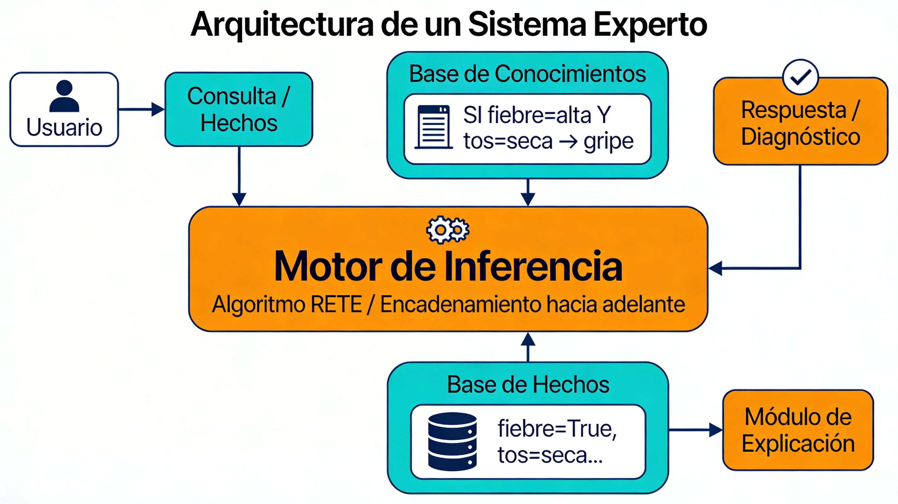

Sistemes Experts
Què és un sistema expert?
Un sistema expert és un programa que intenta imitar la capacitat de decisió d'un expert humà en un domini concret, utilitzant regles i fets en lloc de dades etiquetades com en Machine Learning clàssic.
Característiques típiques:
- Treballen sobre un domini concret (medicina, finances, suport tècnic, etc.)
- Separan el coneixement (regles) dels dades (fets).
- Ofereixen explicacions de per què s'ha arribat a una conclusió (traçat de regles).
Components d'un sistema expert
Elements principals:
- Base de coneixement: conjunt de regles del tipus “SI condición ENTONCES acción/conclusión”.
- Base de fets: informació concreta de la situació actual (síntomes d'un pacient, dades d'un client, etc.)
- Motor de inferència: mecanisme que aplica les regles als fets per deduir noves conclusions.
- Interfície de usuari: forma de introduir fets i mostrar resultats o explicacions.
En moltes implementacions modernes en Python, estos components se representen com:
- Classes i decoradors per a les regles.
- Objectes (fets) que se manipulen a través del motor de inferència.
- Un bucle d'execució que dispara regles fins que no hi ha més regles aplicables.

Tipus de raonament: encadenament cap avant i can enrere
En sistemes basats en regles s'apliquen dues estratègies clàssiques:
- Encadenament cap avant (forward chaining):
- Arranca dels fets coneguts.
- Aplica regles les condicions de les quals es compleixen.
- Genera nous fets fins que arriba a una conclusió.
-
És típic de sistemes reactivos i de monitorització.
-
Encadenament cap enrere (backward chaining):
- Arranca d'una hipòtesi o conclusió desitjada.
- Busca quines regles la poden justificar.
- Comprova les premisses d'eixes regles, i així successivament
- Intenta comprovar premisses preguntant a l'usuari o buscant fets.
- Es típic de sistemes de diagnóstic (“¿tiene fiebre?”, “¿tiene tos seca?”, etc.).
Moltes llibreries de Python implementen encadenament cap avant.
Representación del conocimiento: reglas y hechos
Un esquema habitual de regla és:
- SI
<condiciones sobre hechos>ENTONCES<acciones o nuevos hechos>.
Exemple en pseudocodi:
- SI
edad > 65Yfiebre = altaENTONCESriesgo = alto.
En Python, les regles s'implementen normalment com:
- Funcions o mètodes decorats.
- Patrons sobre classes de fets (objectes que encapsulen dades).
Llibreries en Python per a sistemes expertos i motores de reglas
Hi ha vàries opcions per treballar amb sistemes experts o motors de regles en Python:
- Experta:
- Llibreria específica per a sistemes experts, inspirada en CLIPS.
- Implementa un motor d'encadenament cap endavant basat en RETE.
- Utilitza classes
FactiKnowledgeEngine, i decoradors@Ruleper definir regles. -
Es adequada per a práctiques docents on es vulga mostrar la separació regles/fets.
-
durable_rules:
- Micro‑framework per a regles i processament d'events en temps real.
- Dissenyat per coordinar events de múltiples fonts, amb regles més properes a CEP (Complex Event Processing).
-
Es potente pero algo més complejo per a un primer contacte.
-
Motors de regles simples en Python:
- Existeixen llibreries més lleugeres, centrades en avaluar condicions lògiques sobre diccionaris, com ara
py-rules-engineopython_simple_rules_engine. - Són útils per exemples senzills.
Avantatges i limitacions dels sistemes experts
Avantatges: - Poden capturar el coneixement d'experts humans en forma de regles explícites. - Expliquen de forma transparent com arriben a una conclusió. - Son útils cuando no tenim moltes dades històriques etiquetades, però sí coneixement expert.
Limitacions: - Necessiten esforç per construir i mantenir la base de coneixements. - Dificultat per escalar quan s'incrementa molt la quantitat de regles. - No aprenen automàticament de les dades; si cambia el domini s'han de canviar les regles manualment.
En la pràctica solen combinar-se amb tècniques de Machine Learning (per aprenentatge i predicció).